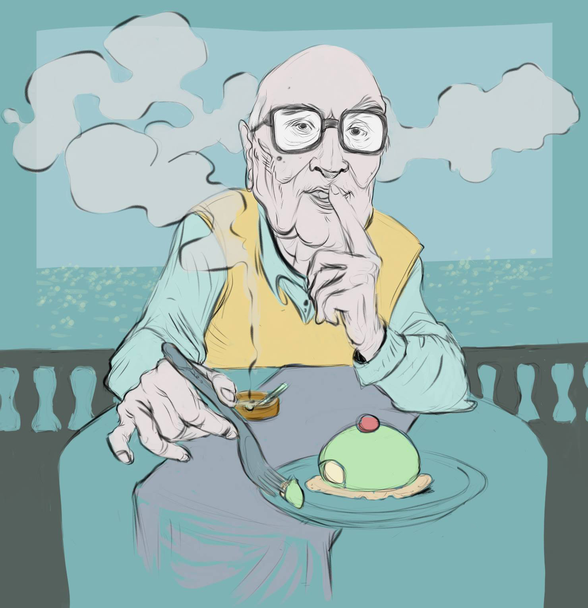
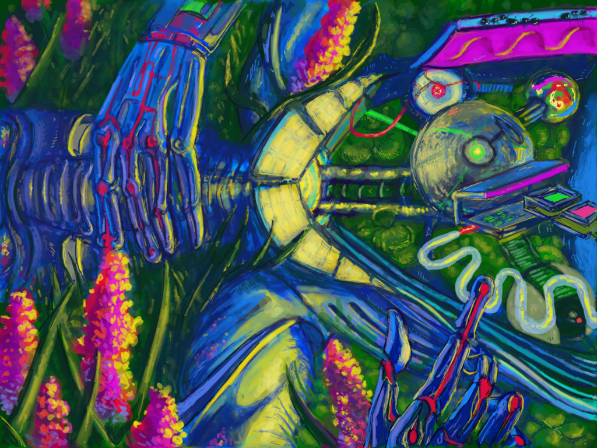
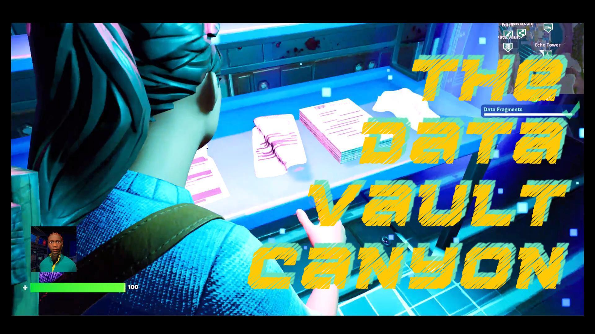
Monograph · 1996–2026
Serena
Stelitano
Image, System, Place. Drawing, collaborative digital art, programmable participation, phygital publishing, virtual architecture, immersive journalism, data visualisation and games.
Position
A practice built through images, systems and places
Serena Stelitano has spent much of her working life moving images out of the places in which they were expected to remain. Drawings became editorial commentary and conversations. Conversations entered programmable systems. Digital works acquired printable and physical counterparts. Exhibitions became buildings; buildings became reporting environments; data became something that could be walked through or worn; investigations eventually became games.
Her formal training combined drawing and composition with restoration and cataloguing. Later work added editorial illustration, collaborative digital practice, blockchain-native art, international virtual curation, regenerative farming, journalism training and XR production. Across these fields, provenance, classification, access, spatial organisation and public participation recur as working concerns.
Since 2021 she has worked with the Center for Collaborative Investigative Journalism on immersive investigations and public experiences. Her professional profile also records regenerative farming and management in Tuscany and the direction of bottega di Serste.
1996–2018
Drawing Before the Interface
The early practice is grounded in editorial illustration, comics, natural-history subjects, cultural heritage and public issues. Pitoti / PITOON translated the rock engravings of Valle Camonica into contemporary narrative form. The Black Cat approached Poe through sequence, atmosphere and character. Social and political drawings developed alongside sports illustration and visual journalism.
Carugate e il Parco degli Aironi (2014) grew from a local mobilisation around the proposed expansion of the Carosello shopping centre. Emanuele Lecchi developed the original concept and reference images; Stelitano produced the drawings.

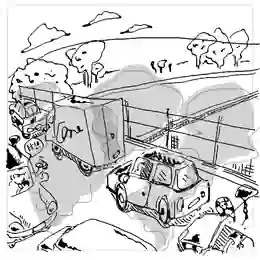
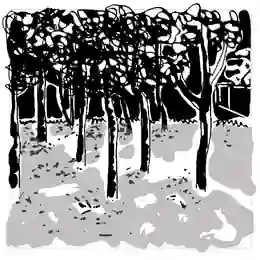
Ucki: Diary of a Stone-age Boy combined archaeological interpretation, character design and educational publishing. Its Pleistocene fauna memory game existed as a digital printable designed to become physical cards.
The 2016 portrait Andrea Camilleri, cassatina sulla terrazza a Marinella, produced during the SeLoPhlee period, later developed an independent editorial life under an open licence. Its documented circulation includes cultural publications, journals, newspapers and Wikiquote.
2015–2020
Drawing With Others
DADA organised drawing as visual conversation. An image could answer another image, redirect a sequence, introduce a character or leave a problem for the next participant. Stelitano’s participation extended through visual conversations, live drawing, early cryptoart, charity activity and experiments around generative systems and token economies.
Creeps & Weirdos placed DADA drawings inside an early blockchain-native collection concerned with scarcity, provenance and digital editions. Soul in the Machine / DADAGAN later brought collaborative drawing into a live hybrid system involving human drawing, generative processing and physical/digital presentation.
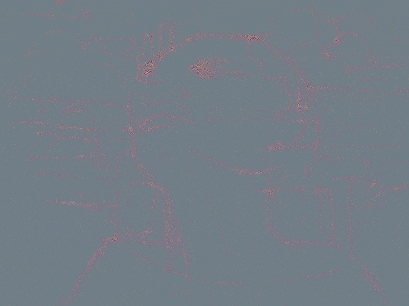
2019–2022
Programmable Images, Physical Consequences
TXU.TOTEM
The five-person TXU collective contributed states to a programmable master whose visible composition could change. Serste’s states included SNK, HEN, FRL and SOL. The work survives as Async Art master token 108 and as a record of collective programmable authorship.
Oracle
Oracle, programmable fortune-teller distributed control among the artist, owners of seven Sibyl leaf layers, an autonomous Apollo component and the person consulting the work. Stelitano also developed explanatory writing, participatory events, derivatives and a printable version with background art, cards and a booklet.
Andrea Grows
Andrea Grows carried interaction into publishing. The webcomic connected branching choices, DADA drawing processes, NEAR/Mintbase publishing, NFT distribution, QR access and a physical collector box.
2020–2023
Building Places for Art
Stelitano’s first years in Cryptovoxels/Voxels combined curation and building. PYF — Presente y Futuro of the Human Civilization brought Global South artists into a navigable virtual exhibition. Solo exhibitions, shared venues and collective projects followed. DADA HOUSE translated a drawing community into a place assembled from images, objects and rooms.
Rare Effect Vol. 1 linked a physical cultural programme in Lisbon to a virtual gallery modelled after Arroz Estúdios. Wildeverse connected a German festival with counterpart environments in Cryptovoxels and Somnium. A digital twin of Naples’ catacombs became a setting for cryptoart.
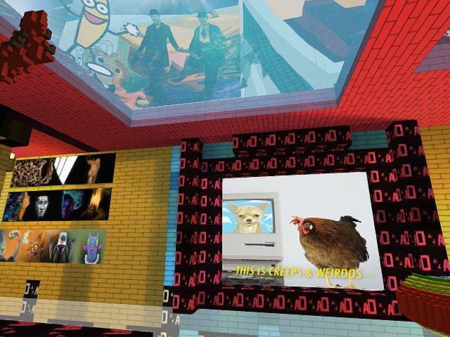
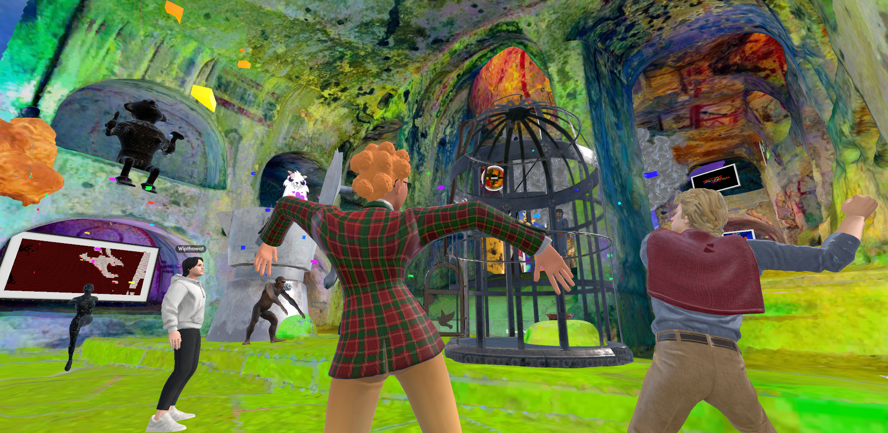
2021–2023
When Reporting Becomes a Place
With CCIJ, Stelitano applied spatial design to investigative reporting. Her workflow follows the reportage from development, expands research on locations and background, adapts visual materials, maintains adherence to data, shares test-builds with the team, refines them editorially and technically, tests public access conditions and preserves versions as digital history.
An Encroaching Desert Intensifies Nigeria’s Farmer-Herder Crisis translated reporting on environmental pressure and conflict into a voxel environment. Rivers of Sewage expanded the format into welcome rooms, reconstructed spaces, learning areas and data rooms. Not the Kind of Life a Human Being Should Live, Direct Potable Reuse and Fueling War developed further relations among photography, reconstructed environments, external geographic tools and visitor movement.
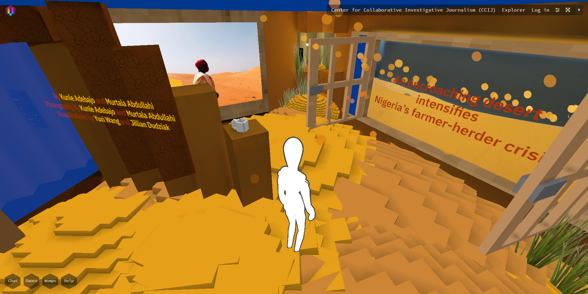
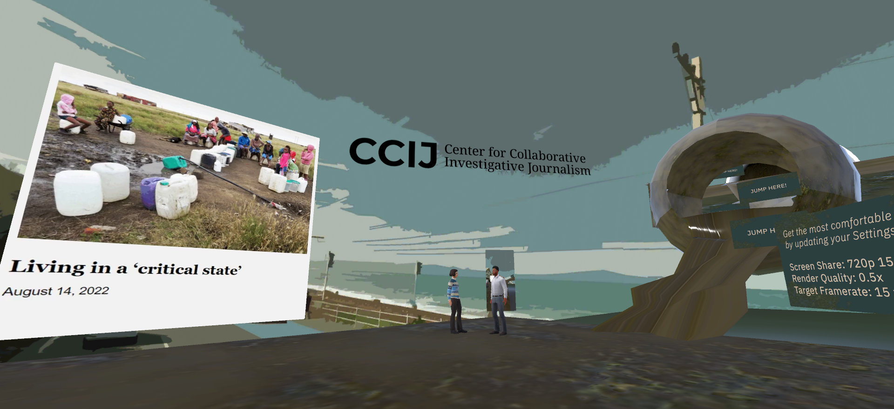
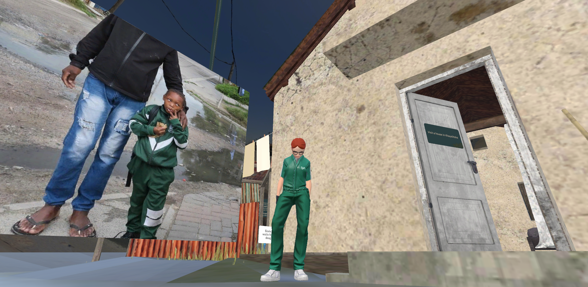
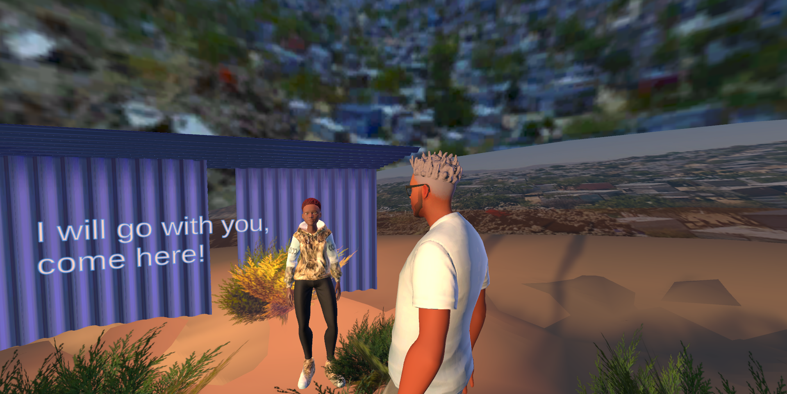
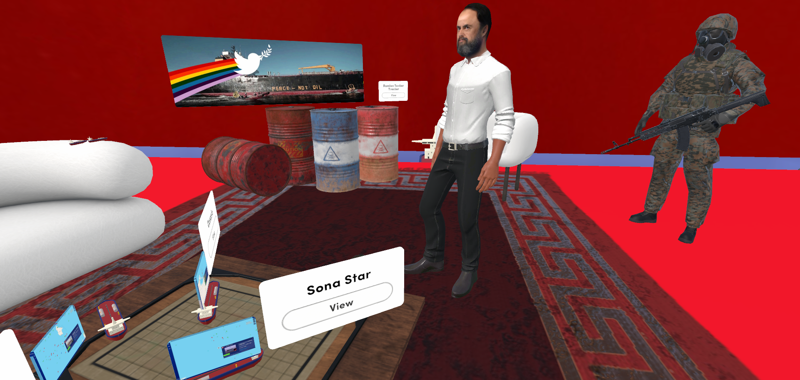
2022–2024
Walking and Wearing Data
Walk the Data organised wastewater compliance information spatially. In Direct Potable Reuse, the virtual environment opened outward through a Google Earth connection, allowing the room to act as one point in a larger geographic reading.
Dreadlocks and Discrimination moved data onto the visitor’s avatar. Categories of reported discriminatory experience were translated into three-dimensional wearable objects that could be selected and worn during public Data Viz Happenings.
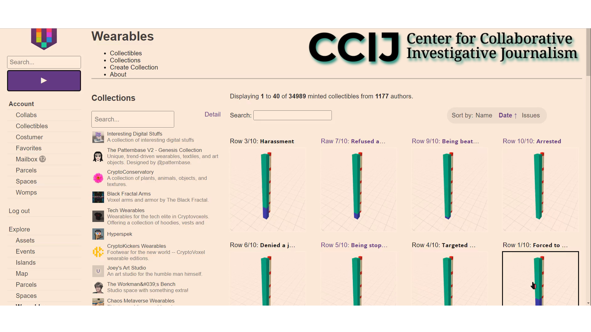
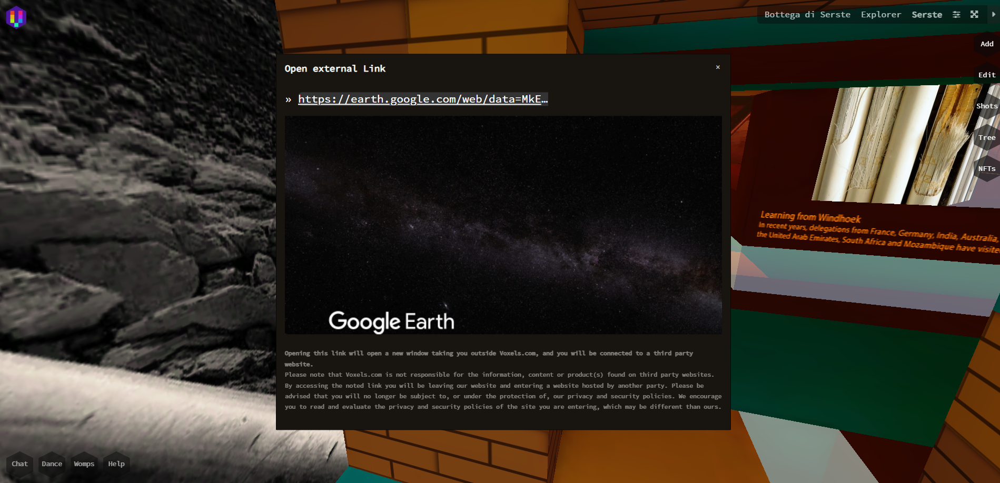
2023–2025
Three Degrees of Participation
The XR layer developed around Democracy Deferred was organised across three levels of interaction: open-world exploration in Voxels, place-and-play AR in Zappar, and investigation through a game environment in Fortnite.
Level 1 — explore
The Voxels environment distributes the investigative series across space through photography, reporting, voxelised magazines, video, audio and reconstructed obstacles associated with election malfeasance.

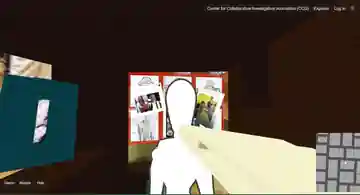
Level 2 — place and shield
Shield Your Vote places polling-place objects into the player’s surroundings. A ballot-container lid becomes a shield against malfeasance smoke and attacking social posts. The experience also developed 360° scenes and Wear the Data.
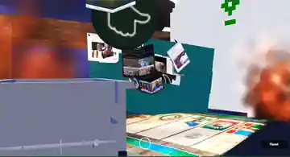
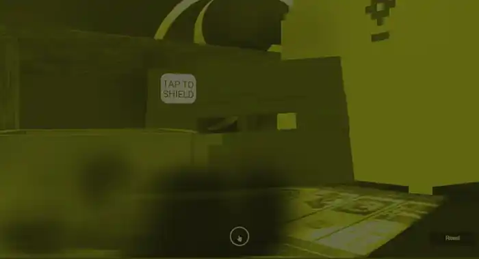
Level 3 — investigate
The third level carries the shared logic into Fortnite UEFN, where the investigative theme becomes a persistent game environment organised around data recovery, navigation, threats and a final decision.
2025–2026
The Investigation Becomes a Game
The Data Vault Canyon is organised around a damaged newsroom, Data Fragments, fog, verification and a final decision about the fate of information. Design work covers level structure, visual metaphor, UI, NPC systems, progression, data recovery and platform compliance.
The design dossier assigns investigative functions to editor, on-site journalist, data scientist and AI-chatbot roles. Fog represents engineered confusion and information manipulation. Data Fragments represent material that must be recovered and checked. Later level concepts extend the system toward coordinated bot activity in The Bots Ridge.
The final choice
The current Data Vault level ends with two actions: Release the Data and Seal the Data. The player reaches that interface after spending the level locating and protecting the material at stake.
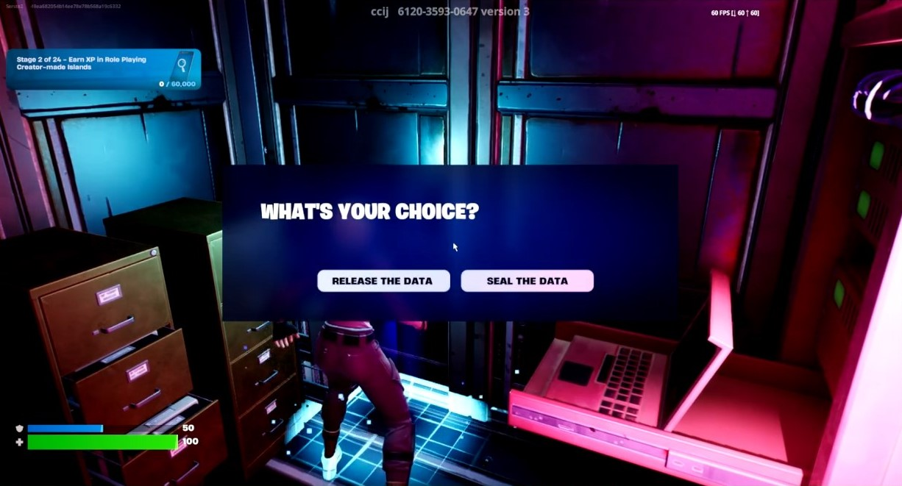
2019–2026
Ground, Climate, Writing
Since 2019 Stelitano has also worked as a regenerative farmer and manager in Tuscany. Land management, biodiversity, climate and public policy increasingly enter her writing and XR work. Her 2025–2026 writing includes long-form journalism on professional trauma among investigative journalists, environmental and historical analysis of the Maremma, and work around agriculture, zoonotic risk and regenerative futures.
Forest Is Life
Forest Is Life — But Nigeria’s Last Rainforest Is Falling Fast connects reporting to an XR data layer in which temperature differences are translated into placeable AR elements. Puddle Placer AR extends the line of work in which data gains dimension, position and behaviour.
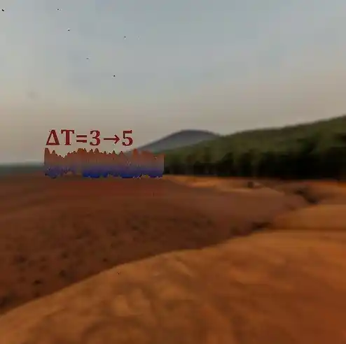
Public use · snapshot 2026
Visits, attendance and public use
The figures below are dated platform or event counters. Voxels and Spatial counts are raw visits/views and should not be read as unique people.
Selected provenance & circulation
Works that continue outside their first context
TXU.TOTEM #108. Async Art master; five-person collective programmable artwork. Authorship and auction records survive, with Serste among the contributors.
Oracle. Async programmable master and layers, with related printable and MakersPlace derivatives. Public documentation records layer logic, collector agency and participatory use.
Andrea Grows. NEAR/Mintbase publishing combined with an interactive webcomic, collector box, QR flow and physical distribution.
Andrea Camilleri portrait. The 2016 open-license portrait has circulated through at least nine independently accessible editorial/periodical contexts plus multiple Wikiquote uses. The documented circulation includes La Voce di New York, Biblioteche oggi, Treccani, Il Sole 24 Ore/Nòva100, CulturaIdentità, 4U Magazine and Incontri.
Selected chronology
1996–2026
| 1996–2001 | Art training: drawing, composition, restoration, cataloguing, law and economics. |
| 2012–2013 | Pitoti / PITOON / Valle Camonica. |
| 2014 | Carugate e il Parco degli Aironi; bottega di Serste develops as independent practice. |
| 2015–2018 | Editorial illustration, literary work, natural-history subjects, political/social imagery, DADA visual conversations. |
| 2016 | Andrea Camilleri, cassatina sulla terrazza a Marinella; Visto dal basso editorial work. |
| 2016–2019 | Ucki: Diary of a Stone-age Boy; Pleistocene Fauna Memory Game. |
| 2017 | Creeps & Weirdos. |
| 2018–2019 | The Way Home, multimedia / AR migration project. |
| 2019 | Soul in the Machine / DADAGAN; regenerative farming work begins. |
| 2020 | PYF in Voxels; Simon Wairiuko solo curation; TXU.TOTEM; Oracle; The Pagans and their Rites. |
| 2021 | NFT(Kitties)LAB; Riva Taylor NFT Space; Rare Effect Vol. 1; Wildeverse; CCIJ collaboration begins. |
| 2021–2022 | Andrea Grows, interactive webcomic and collector box. |
| 2022 | An Encroaching Desert Intensifies Nigeria’s Farmer-Herder Crisis; Rivers of Sewage; immersive data and learning rooms. |
| 2023 | Dreadlocks and Discrimination; Data Viz Happenings; CCIJ learning rooms. |
| 2023–2025 | Democracy Deferred; Shield Your Vote; multi-platform XR progression. |
| 2025 | Forest Is Life / Puddle Placer AR; The Data Vault Canyon; Truth & Dare. |
| 2025–2026 | The Bots Ridge expansion. |
| 2026 | Environmental and investigative writing; ICE Paperdoll DataViz; continued XR product development. |
Public anchors
Selected sources
- Serena Stelitano — LinkedIn public profile, 2026.
- Wikimedia Commons — SerStelitano / Andrea Camilleri portrait.
- DADA / PowerDADA — visual conversations, Creeps & Weirdos, DADAGAN and smart-contract records.
- Async Art / Digital Rescue Lab — TXU.TOTEM and programmable-art records.
- Mintbase / NEAR Forum — Andrea Grows, Createbase and Wildeverse records.
- CCIJ / VEZA — immersive investigations, Dreadlocks and Discrimination, Democracy Deferred and Forest Is Life.
- Fortnite / CCIJ — The Data Vault Canyon, island code 6120-3593-0647.